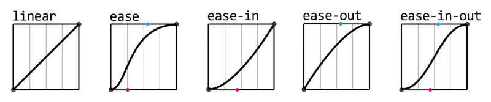

Анимации / Трансформации
Анимации (animation)
Библиотека анимаций - Animate.css
// синтаксис
@keyframes smoothDisplay {
from {
opacity: 0;
}
to {
opacity: 1;
}
}
// в процентах указан�а раскадровка анимации:
// 0% - начало, 100% - конец
@keyframes smoothDisplay {
0% {
opacity: 0;
}
50% {
opacity: 0.5;
}
100% {
opacity: 1;
}
}
// Применение анимации
.some-class {
// название
animation-name: smoothDisplay;
// продолжительность
animation-duration: 2s | 2000ms;
// кол-во итераций
animation-iteration-count: 1 | 2 |... | infinite;
// направление (normal - 0-100%, reverse 100%-0)
animation-direction: normal * | reverse;
// задержка (задержка перед стартом)
animation-delay: 1s | 1000ms;
// состояние элемента до и после анимации
// работает только с заданным числом циклов
animation-fill-mode: forwards | backwards | both;
// функция изменения анимации по времении
animation-timing-function: linear * | ease | ease-in | ease-out | ease-in-out;
// режим анимации (можно остиановить через JS)
animation-play-state: running * | paused;
}
animation-fill-mode
- При forwards до начала анимации он находится как в коде, после завершения анимации принимает состояние как на 100% кадре анимации
- При backwards до начала анимации элемент находится на 0% кадре анимации, после анимации возвращается в исходное состояние (как он находится в коде без анимации)
- both объединяет оба свойства, до начала анимации как на 0% шаге анимации, после анимации как на 100% шаге анимации.
animation-timing-function
- linear - линейная (по ум*);
- ease - парабола;
- ease-in - вогнутая парабола;
- ease-out - выгнутая парабола;
- ease-in-out - S-обр. парабола;
- cubic-bezier (1,1,1,1) - Кривые Бизье;
- steps (5, end) (число_шагов, направление) - изменение по шагам

Краткая запись animation
animation:
1 - |animation-name| имя
2 - |animation-duration| длительность
3 - |animation-timing-function| функция
4 - |animation-iteration-count| повторы
.some-class {
animation: move 3s linear 10;
// Множественная анимация
animation:
rotate 1s linear 1,
spin 3s linear 1;
}
Трансформации (transform)
// синтаксис
.some-class {
transform: вид_трансформации(значение);
// длительность трансформации
transition-duration: 1s | 1000ms;
// ПЕРЕМЕЩЕНИЕ
transform: translateX(100px);
transform: translateY(50px);
transform: translate(100px, 50px);
// МАСШТАБИРОВАНИЕ
transform: scaleX(2);
transform: scaleY(2);
transform: scale(2);
transform: scaleX(-1); // с "-" будут переворачиваться
transform: scaleY(-1);
transform: scale(-1);
// ПОВОРОТ
transform: rotate(45deg);
transform: rotate(-45deg);
// УГЛОВОЕ ИСКАЖЕНИЕ
transform: skewX(45deg);
transform: skewY(45deg);
transform: skew(
45deg,
45deg
); // На 45 градусов по оси x и y, при этом объект исчезает
transform: matrix(2, 2, 0, 2, 45, 0); // МАТРИЦА - matrix(a, b, c, d, tx, ty)
// Множественная трансформация
transform: rotate(135deg) scale(1.5);
}
transform-origin
Положение элемента после трансформации, задаёт, где будет располагаться объект после трансформации относительно своего исходного положения, также это выбор оси вращения для rotate. Работает для scale и rotate.
.some-class {
transform: scale(0.2);
// Аналог: top left;
transform-origin: 0% 0%;
// Аналог: right bottom;
transform-origin: 100% 100%;
// Аналог: left bottom;
transform-origin: 0% 100%;
// По ум*. Центр
transform-origin: 50% 50%;
// можно прописывать словами
transform-origin: right center;
// Выбор оси вращения
transform: rotate(360deg);
transform-origin: right bottom;
}
matrix (a, c, b, d, x, y)
- a - scale X
- c - scale Y
- b - деформация по вертикали
- b - деформация по вертикали
- d - деформация по горизонтали
- x - смещение по X
- y - смещение по Y
3D-трансформации
matrix3d (n,n,n,n,n,n,n,n,n,n,n,n,n,n,n,n)
16 параметров
translate3d, scale3d, rotare3d (x, y, z)
.some {
transform-style: preserve-3d;
transform: scale3d(2, 2, 5);
transform: translate3D(20px, 20px, 50px);
transform: rotate3d(10px, 10px, 10px, 40deg);
// сдвиги по осям
transform: translateX(10);
transform: translateY(10);
transform: translateZ(10);
}
perspective, perspective-origin
Грубина по оси Z.
.some {
perspective: none;
/* <length> values */
perspective: 20px;
perspective: 3.5em;
/* Global values */
perspective: inherit;
perspective: initial;
perspective: revert;
perspective: revert-layer;
perspective: unset;
}
backface-visibility
TODO
.some-element {
// без трансформации
transform: matrix(1, 0, 0, 1, 0, 0);
transfomr: matrix(1, 1, 1, 1, 1, 1);
transfomr: matrix3d(1, 1, 1, 1, 1, 1);
}
Центровка с помощью transform
Центровка с помощью transform и position внутри родительского элемента. Должны быть фикс. размеры дочерненго элемента и свободное пространство у родительского.
.sample3 {
position: absolute;
left: 50%;
top: 50%;
transform: translateX(-50%) translateY(-50%);
}
Плавные переходы (transition)
.some-class {
background-color: deeppink;
// Свойсва для плавного перехлда
transition-property: background-color;
// Продолжительность плавного перехода
transition-duration: 230ms | 0.23s;
// Задержка перехода
transition-delay: 2s;
// функция изменения плавности по времении
transition-timing-function: linear * | ease | ease-in | ease-out | ease-in-out;
&:hover {
background-color: maroon;
}
}
Краткая запись transition
transition:
1 - |property|
2 - |duration|
3 - |timing-function|
4 - |delay|
.some-class {
// Краткая запись
transition: width 2s ease 0.5s;
// Множественная плавность
transition-property: width, height, background;
// для всех свойств
transition: all 0.23s;
}
Шорткаты транформаций
С недавнего времени в ccs включена поддержка более короткой записи трансформаций.
.some-class {
rotate: 45deg;
scale: 2;
translate: 30px 10px;
}